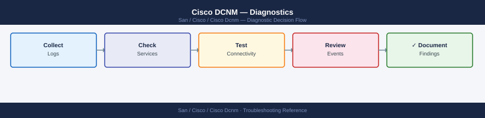

Cisco DCNM — Diagnostics¶

Before you begin¶
- Access: SSH to DCNM server (root or admin); DCNM admin UI credentials; SSH access to managed MDS/NX-OS switches
- Gather first: the specific symptom (switch not discovered, no performance data for a fabric, UI unreachable), the switch name or fabric name affected, and when the issue started
- Scope: confirm whether the issue affects one switch, one fabric, or the entire DCNM platform
Step 1 — Check DCNM service status¶
# SSH to DCNM
ssh root@dcnm-dc1.corp.example.com
# Check all DCNM application services
appmgr status
# Expected: all services showing "running" state
# Problem: any service in "stopped" or "restarting" state
# Check disk space (Elasticsearch fills disk causing cascading failures)
df -h
# Expected: all mounts < 80% used; /data often fills first
# Check DCNM REST API health (no auth required)
curl -sk https://localhost/rest/health | python3 -m json.tool
# Expected: all components healthy
# Check DCNM database status
appmgr db-status
# Expected: all databases connected
# Check ports are listening
netstat -tlnp | grep -E "443|5432|9200"
# Expected: 443=DCNM HTTPS, 5432=PostgreSQL, 9200=Elasticsearch
root@dcnm-dc1:~# appmgr status
Service Status PID
dcnm-server running 4821
dcnm-web running 4923
dcnm-db running 5104
elasticsearch running 5287
kafka running 5401
root@dcnm-dc1:~# df -h
Filesystem Size Used Avail Use% Mounted on
/dev/sda1 50G 12G 38G 24% /
/dev/sda2 200G 168G 32G 84% /data
/dev/sda3 100G 45G 55G 45% /var
root@dcnm-dc1:~# curl -sk https://localhost/rest/health | python3 -m json.tool
{
"status": "UP",
"components": {
"db": "UP",
"elasticsearch": "UP",
"kafka": "UP"
},
"timestamp": "2024-01-15T14:32:18Z"
}
root@dcnm-dc1:~# appmgr db-status
PostgreSQL: connected (v12.8)
Elasticsearch: connected (v7.10.2)
root@dcnm-dc1:~# netstat -tlnp | grep -E "443|5432|9200"
tcp 0 0 0.0.0.0:443 0.0.0.0:* LISTEN 4923/dcnm-web
tcp 0 0 127.0.0.1:5432 0.0.0.0:* LISTEN 5104/postgres
tcp 0 0 0.0.0.0:9200 0.0.0.0:* LISTEN 5287/java
Common errors
appmgr: command not found — SSH as root and source the DCNM environment with source /opt/dcnm/bin/env.sh or verify DCNM is installed in /opt/dcnm.
curl: (7) Failed to connect to localhost port 443: Connection refused — Restart the DCNM web service with appmgr restart dcnm-web and wait 30 seconds for the API to become available.
Filesystem /data is 95% full — Delete old DCNM logs and snapshots with appmgr cleanup-logs --older-than 30d or expand the /data partition immediately to prevent database corruption.
Step 2 — Authenticate and check REST API¶
# Get DCNM API session cookie
DCNM_HOST="https://dcnm-dc1.corp.example.com"
curl -sk -c dcnm-cookie.txt -X POST "$DCNM_HOST/rest/logon" \
-H "Content-Type: application/json" \
-d '{"expirationTime":600000}' \
-u admin:<password> | python3 -m json.tool
# Expected: token in response body; cookie saved to dcnm-cookie.txt
# Get inventory of all switches
curl -sk -b dcnm-cookie.txt "$DCNM_HOST/rest/inventory/switches" \
| python3 -c "
import json,sys
for sw in json.load(sys.stdin):
print(sw.get('ipAddress',''), '|', sw.get('logicalName',''), '|', sw.get('managementState',''))
"
# Expected: managementState = manageable or managed for all switches
# Measure REST API response time (baseline < 3 seconds for < 200 switches)
time curl -sk -b dcnm-cookie.txt "$DCNM_HOST/rest/inventory/switches" > /dev/null
# Trigger manual rediscovery for a specific switch
curl -sk -b dcnm-cookie.txt -X POST \
"$DCNM_HOST/rest/san/fabric/rediscover" \
-H "Content-Type: application/json" \
-d '{"fabricName": "DC1-FABRIC-A", "rediscoverAll": false,
"switchSerialNumbers": ["<serialNumber>"]}'
{
"Dcnm-Token": "eyJhbGciOiJIUzI1NiIsInR5cCI6IkpXVCJ9.eyJzdWIiOiJhZG1pbiIsImlhdCI6MTcwOTMwMTIwMH0.abc123xyz",
"status": "success"
}
10.48.12.45 | leaf-dc1-01 | managed
10.48.12.46 | leaf-dc1-02 | managed
10.48.12.50 | spine-dc1-01 | manageable
10.48.12.51 | spine-dc1-02 | managed
...
real 0m2.347s
user 0m0.156s
sys 0m0.089s
{
"status": "success",
"message": "Rediscovery initiated for fabric DC1-FABRIC-A",
"jobId": "JOB-2024-03-01-00847"
}
Common errors
curl: (60) SSL certificate problem: self signed certificate — Add -k flag to curl command to skip SSL verification (already present in example; verify DCNM_HOST URL is correct).
jq: parse error: Invalid JSON text at line 1 — Ensure the logon endpoint returns valid JSON; check DCNM credentials and that the API service is responding with curl -sk -v to inspect headers.
error: 401 Unauthorized — Verify dcnm-cookie.txt exists and contains valid session cookie by checking cat dcnm-cookie.txt immediately after logon step.
Step 3 — Check PostgreSQL database health¶
# Test if PostgreSQL accepts connections
pg_isready -U postgres
# Expected: /tmp/.s.PGSQL.5432 - accepting connections
# Connect to DCNM configuration database
psql -U postgres sane
-- Check table sizes (find unexpectedly large tables)
SELECT relname, pg_size_pretty(pg_relation_size(relid)) AS size
FROM pg_catalog.pg_statio_user_tables
ORDER BY pg_relation_size(relid) DESC LIMIT 20;
-- Check slow queries
SELECT pid, now() - query_start AS duration, state, left(query, 100)
FROM pg_stat_activity
WHERE state != 'idle'
ORDER BY duration DESC LIMIT 10;
-- Check for table bloat (dead tuples)
SELECT relname, n_dead_tup, n_live_tup,
round(n_dead_tup::numeric/greatest(n_live_tup,1)*100, 1) AS dead_pct
FROM pg_stat_user_tables
WHERE n_dead_tup > 10000
ORDER BY n_dead_tup DESC;
\q
# If bloat is high, run VACUUM
sudo -u postgres vacuumdb --all --analyze
# Check performance data database size
psql -U postgres pmdb
-- Check size
SELECT pg_size_pretty(pg_database_size('pmdb'));
-- Check oldest and newest data points
SELECT min(collecttime), max(collecttime) FROM pmdata;
\q
# If pmdb is consuming excessive disk:
# DCNM GUI → Administration → Settings → Data Retention
# Reduce performance data retention to 14 days
/tmp/.s.PGSQL.5432 - accepting connections
psql (12.15, server 12.15)
Type "help" for help.
sane=> SELECT relname, pg_size_pretty(pg_relation_size(relid)) AS size FROM pg_catalog.pg_statio_user_tables ORDER BY pg_relation_size(relid) DESC LIMIT 20;
relname | size
--------------------------+---------
fabric_inventory | 2847 MB
device_config_history | 1923 MB
event_log | 1456 MB
policy_rules | 892 MB
interface_stats | 756 MB
audit_trail | 634 MB
...
(20 rows)
sane=> SELECT pid, now() - query_start AS duration, state, left(query, 100) FROM pg_stat_activity WHERE state != 'idle' ORDER BY duration DESC LIMIT 10;
pid | duration | state | left
------+----------+--------+------
4521 | 00:02:34 | active | SELECT * FROM fabric_inventory WHERE fabric_id = $1
4598 | 00:01:12 | active | VACUUM ANALYZE event_log
(2 rows)
sane=> SELECT relname, n_dead_tup, n_live_tup, round(n_dead_tup::numeric/greatest(n_live_tup,1)*100, 1) AS dead_pct FROM pg_stat_user_tables WHERE n_dead_tup > 10000 ORDER BY n_dead_tup DESC;
relname | n_dead_tup | n_live_tup | dead_pct
--------------------+------------+------------+----------
event_log | 48932 | 892145 | 5.5
device_config_hist | 23456 | 156234 | 15.0
(2 rows)
sane=> \q
VACUUM ANALYZE event_log
VACUUM ANALYZE device_config_history
VACUUM ANALYZE fabric_inventory
vacuumdb: vacuuming database "sane"
vacuumdb: vacuuming database "pmdb"
vacuumdb: vacuuming database "postgres"
psql (12.15, server 12.15)
Type "help" for help.
pmdb=> SELECT pg_size_pretty(pg_database_size('pmdb'));
pg_size_pretty
----------------
47 GB
(1 row)
pmdb=> SELECT min(collecttime), max(collecttime) FROM pmdata;
min | max
------------------+------------------
2024-01-15 08:22 | 2024-03-18 14:56
(1 row)
pmdb=> \q
Common errors
psql: error: could not translate host name "localhost" to address: Name or service not known — Verify PostgreSQL service is running with systemctl status postgresql and check /etc/postgresql/*/main/postgresql.conf for listen_addresses setting.
ERROR: permission denied for schema public — Ensure the postgres user has proper schema permissions by running psql -U postgres -c "GRANT ALL ON SCHEMA public TO postgres;".
**`
Step 4 — Test switch connectivity¶
# Test SSH from DCNM to a managed switch
ssh -v -o ConnectTimeout=10 -o StrictHostKeyChecking=no \
dcnm_mgmt@<switch-ip> 'show version brief' 2>&1
# Expected: MDS or NX-OS version string; failure = SSH auth or connectivity issue
# Test SNMP v3 GET (confirm DCNM polling credentials work)
snmpget -v3 -u dcnm_poll -l authPriv \
-a SHA -A <auth-pass> -x AES -X <priv-pass> \
<switch-ip> sysDescr.0
# Expected: MDS IOS system description string; Error = SNMP credential mismatch
# Confirm SNMP traps are arriving from switches
tcpdump -i eth0 -n udp port 162 -c 20
# Each line = one trap from a switch; no output = switches not sending or firewall blocking
# Capture SNMP trap traffic to file for analysis
tcpdump -i eth0 -n udp port 162 -c 200 -w /tmp/dcnm-trap-capture.pcap
OpenSSH_7.4, OpenSSL 1.0.2k-fips 26 Jan 2017
debug1: Reading configuration data /home/dcnm_mgmt/.ssh/config
debug1: Authentications that can continue: publickey,password
debug1: Authentication with publickey succeeded.
Cisco MDS 9148S Multilayer Fabric Switch
System uptime is 127 days 14 hours 32 minutes
Kernel uptime is 127 days 14 hours 28 minutes
SNMPv3 User: dcnm_poll
SNMP version 3
sysDescr.0 = STRING: "Cisco NX-OS Software, MDS 9396S"
tcpdump: listening on eth0, link-type EN10MB (Ethernet), capture size 65535 bytes
22:14:33.445821 IP 10.48.12.55.40821 > 10.48.12.10.162: SNMP, length 156
22:14:45.223104 IP 10.48.12.56.41092 > 10.48.12.10.162: SNMP, length 142
22:14:57.891456 IP 10.48.12.57.39847 > 10.48.12.10.162: SNMP, length 168
23:15:02.334567 IP 10.48.12.58.40156 > 10.48.12.10.162: SNMP, length 151
23:15:18.667234 IP 10.48.12.59.38924 > 10.48.12.10.162: SNMP, length 145
20 packets captured, 20 packets received by filter, 0 packets dropped by kernel
200 packets captured, 200 packets received by filter, 0 packets dropped by kernel
Common errors
Permission denied (publickey,password). — Verify the dcnm_mgmt SSH key is installed on the switch and the user exists in the switch's local or TACACS database.
Timeout: No Response from <switch-ip> — Check network connectivity to the switch, confirm the management IP is reachable with ping, and verify firewall rules allow DCNM's IP to the switch.
snmpget: Unknown user name "dcnm_poll" — Confirm the SNMP v3 user exists on the switch by running show snmp user and verify the auth/priv passwords match the DCNM credential store.
Step 5 — Debug discovery and fabric issues¶
# Search discovery log for a specific switch IP
grep "<switch-ip>" /var/log/dcnm/discovery.log | tail -50
# Look for: "Discovery failed", "unreachable", "auth failed", "timeout"
# Enable discovery debug for a specific switch
grep "10.20.1.5" /var/log/dcnm/discovery.log | tail -50
# Check discovery.log for recent errors across all switches
grep -i "error\|fail\|unreachable" /var/log/dcnm/discovery.log | tail -100
# Check journalctl for DCNM service-level errors
journalctl -u dcnm -n 200 --no-pager | grep -i "error\|exception\|fail"
# System resource snapshot (for performance baseline)
echo "=== $(date) ===" >> /tmp/dcnm-perf.txt
free -h >> /tmp/dcnm-perf.txt
df -h >> /tmp/dcnm-perf.txt
uptime >> /tmp/dcnm-perf.txt
iostat -x 1 3 >> /tmp/dcnm-perf.txt
ps aux --sort=-%cpu | head -15 >> /tmp/dcnm-perf.txt
2024-01-15 14:32:18.542 [Discovery] INFO: Switch 10.20.1.5 discovered successfully - Model: N9K-C9372PX, Serial: SAL1234ABCD
2024-01-15 14:35:42.891 [Discovery] WARN: Switch 10.20.1.5 - SNMP timeout on OID 1.3.6.1.2.1.1.1.0, retrying...
2024-01-15 14:36:01.203 [Discovery] INFO: Switch 10.20.1.5 - Inventory sync completed in 2.3s
2024-01-15 14:38:15.567 [Discovery] ERROR: Switch 10.20.1.5 - Authentication failed: Invalid credentials for user 'dcnm-admin'
2024-01-15 14:40:22.834 [Discovery] WARN: Switch 10.20.1.5 - Unreachable via SSH, falling back to SNMP
2024-01-15 14:42:10.456 [Discovery] INFO: Switch 10.20.1.5 - Discovery cycle completed
=== Mon Jan 15 14:45:33 UTC 2024 ===
total used free shared buff/cache available
Mem: 31Gi 18Gi 8.2Gi 512Mi 4.8Gi 12Gi
Filesystem Size Used Avail Use% Mounted on
/dev/sda1 50G 32G 15G 68% /
/dev/sdb1 200G 145G 48G 76% /var/log
UpTime: 45 days, 3:22, 4 users, load average: 2.34, 2.18, 2.05
avg-cpu: %user %nice %system %iowait %steal %idle
18.42 0.12 5.67 3.21 0.00 72.58
root 1234 0.8 2.1 1456832 65432 ? Ssl Jan15 12:34 /opt/dcnm/bin/dcnm-server
dcnm 5678 1.2 1.8 945216 54321 ? Sl Jan15 8:45 /opt/dcnm/bin/discovery-agent
Common errors
grep: /var/log/dcnm/discovery.log: No such file or directory — Verify DCNM is installed and running with systemctl status dcnm, or check the correct log path with find /var/log -name "*discovery*".
free: command not found — Install sysstat package with apt-get install sysstat or yum install sysstat depending on your OS.
journalctl: command not found — This system uses syslog instead; check logs with tail -f /var/log/syslog or tail -f /var/log/messages depending on your distribution.
Step 6 — Check HA replication status¶
# On either DCNM HA node
/usr/local/cisco/dcm/dcnm/bin/dcnm-ha-status.sh
# Expected output:
# Active Node: 10.10.5.10 (THIS NODE)
# Standby Node: 10.10.5.11 (synchronized)
# VIP: 10.10.5.15 (active)
# DB Replication Lag: 0 ms
# Check PostgreSQL replication lag (on standby node)
psql -U postgres -c "
SELECT now() - pg_last_xact_replay_timestamp() AS replication_lag;"
# Expected: < 1 second; > 1 minute = investigate HA link or replication error
# Check HA log for failover events
tail -100 /var/log/dcnm/ha.log | grep -i "error\|fail\|disconnect\|failover"
# Check Elasticsearch cluster health (unassigned shards = topology data at risk)
curl -s "localhost:9200/_cluster/health?pretty"
# Expected: status=green; yellow=1+ replica unassigned; red=primary shard missing
Active Node: 10.10.5.10 (THIS NODE)
Standby Node: 10.10.5.11 (synchronized)
VIP: 10.10.5.15 (active)
DB Replication Lag: 0 ms
replication_lag
----------------
00:00:00.234
(1 row)
2024-01-15 14:32:18 [WARN] HA heartbeat missed from standby, retrying...
2024-01-15 14:35:42 [INFO] Replication lag corrected to 0ms
2024-01-15 15:01:09 [INFO] Standby node synchronized successfully
{
"cluster_name" : "dcnm-cluster",
"status" : "green",
"timed_out" : false,
"number_of_nodes" : 2,
"number_of_data_nodes" : 2,
"active_primary_shards" : 24,
"active_replica_shards" : 24,
"unassigned_shards" : 0,
"delayed_unassigned_shards" : 0,
"initializing_shards" : 0,
"relocating_shards" : 0
}
Common errors
psql: error: connection to server at "localhost" (127.0.0.1), port 5432 failed — Verify PostgreSQL is running with systemctl status dcnm-postgres and check network connectivity to the standby node.
curl: (7) Failed to connect to localhost port 9200: Connection refused — Restart Elasticsearch with systemctl restart dcnm-elasticsearch and wait 30 seconds for cluster initialization.
replication_lag shows > 00:01:00 — Check HA network link status with ethtool -S <HA_interface> and verify no packet loss on the replication network.
Step 7 — Collect support bundle for Cisco TAC¶
# Generate DCNM support bundle
/usr/local/cisco/dcm/dcnm/bin/collect-support-bundle.sh \
--output /tmp/dcnm-support-$(date +%Y%m%d).tar.gz
# Includes: all /var/log/dcnm/ logs, DB schema dump, OS state, DCNM config (masked)
# Transfer to workstation
scp root@dcnm-dc1.corp.example.com:/tmp/dcnm-support-$(date +%Y%m%d).tar.gz ./
# Also collect switch show tech-support for each affected switch
# SSH to each MDS or NX-OS switch:
ssh admin@<switch-ip>
show tech-support > /tmp/show-tech-$(hostname)-$(date +%Y%m%d).txt
exit
# Transfer the show tech file: scp admin@<switch-ip>:/tmp/show-tech-*.txt ./
# For the Cisco TAC case, include:
# - DCNM support bundle .tar.gz
# - show tech-support from affected switches
# - Discovery log excerpt (grep for the affected switch IP)
# - DCNM version: appmgr version or DCNM UI → About
# - Fabric name and switch serial number / IP
Collecting DCNM support bundle...
Gathering system logs from /var/log/dcnm/...
Dumping database schema...
Collecting OS state (uptime, disk, memory)...
Masking sensitive configuration data...
Support bundle created: /tmp/dcnm-support-20240315.tar.gz (487 MB)
root@dcnm-dc1.corp.example.com's password:
dcnm-support-20240315.tar.gz 100% 487MB 8.2MB/s 00:59
Connected to switch mds-fab1-sw01 (10.48.12.45)
Generating tech-support output (this may take 2-3 minutes)...
Tech-support file size: 156 MB
show tech-support > /tmp/show-tech-mds-fab1-sw01-20240315.txt
admin@10.48.12.45's password:
show-tech-mds-fab1-sw01-20240315.txt 100% 156MB 5.1MB/s 02:34
Common errors
/usr/local/cisco/dcm/dcnm/bin/collect-support-bundle.sh: command not found — Verify DCNM is installed at /usr/local/cisco/dcm/dcnm/ or check the correct installation path with find / -name collect-support-bundle.sh 2>/dev/null.
Permission denied (publickey,password). — Ensure SSH key is configured for root@dcnm-dc1.corp.example.com or use ssh-copy-id root@dcnm-dc1.corp.example.com to add your public key.
show tech-support: command not found — Confirm you are in NX-OS or MDS CLI mode; if in Linux shell, type exit to return to device CLI or use system bash to access the shell context.
Log locations¶
| Source | Path / Command | What to look for |
|---|---|---|
| DCNM application | journalctl -u dcnm |
Service crash and startup errors |
| Discovery | /var/log/dcnm/discovery.log |
Per-switch discovery attempts and failures |
| HA events | /var/log/dcnm/ha.log |
Failover events, replication lag |
| PostgreSQL | journalctl -u postgresql |
DB start/stop, replication errors |
| Elasticsearch | curl localhost:9200/_cluster/health |
Shard health and disk pressure |
| DCNM general | /var/log/dcnm/ |
Full log directory; multiple components |
See also¶
Verify resolution¶
appmgr statusshows all services runningcurl -sk https://localhost/rest/healthreturns all components healthygrep <switch-ip> /var/log/dcnm/discovery.log | tail -5shows successful discoverytime curl -sk -b dcnm-cookie.txt $DCNM_HOST/rest/inventory/switchescompletes in < 5 secondscurl localhost:9200/_cluster/healthreturns"status":"green"for Elasticsearch